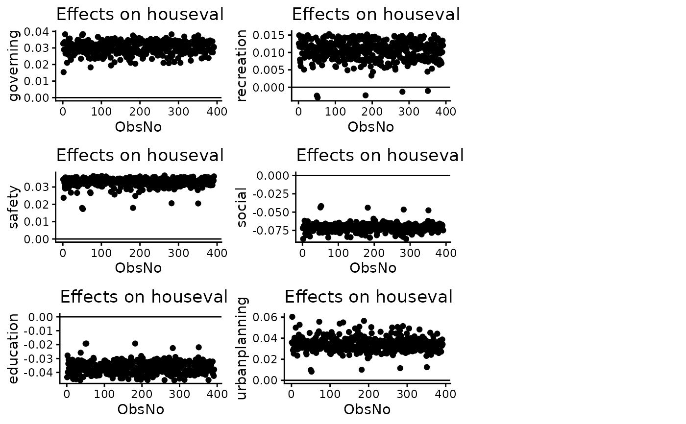

Estimate Fractional Multinomial Logit Models
fracregmlogit.RdUsed to estimate fractional multinomial logit models using quasi-maximum likelihood estimation following Papke and Wooldridge (1996).
Usage
fracregmlogit(
y,
X,
beta0 = NULL,
MLEmethod = "CG",
maxit = 5e+05,
abstol = 1e-05,
cluster = NULL,
reps = 1000,
na.action = stats::na.omit,
...
)Arguments
- y
the dependent variable (N*J). Can be a matrix or a named data frame. The first column of the matrix is automatically treated as the baseline.
- X
independent variable (N*K). Can be a matrix or a named data frame. If there is no intercept term in the X, then an intercept term is automatically added.
- beta0
Initial value for beta used in optimisation. Uses a 1*K(J-1) vector. Default to a vector of zeros.
- MLEmethod
Method of optimisation. Goes into
maxLik(method=MLEmethod)). Choose from "NR","BFGS","CG","BHHH","SANN",or "NM". Default to "CG", the conjugate gradients method. See Details.- maxit
Maximum number of iterations.
- abstol
Tolerance.
- cluster
A vector of clusters to be used for clustered standard error computation. Default to NULL, no cluster computed.
- reps
Number of bootstrap replications to be computed for clustered standard errors.
- na.action
A function specifying how to handle missing values, default is
stats::na.omit. IfNULL, no action is taken.- ...
additional parameters that go into
maxLik()
Value
The function returns an object of class "fracregmlogit". Use fracregmlogit.pe, predict,
residuals, fitted to extract various useful features of the value returned by
fracregmlogit.
An object of class "fracregmlogit" contains the following components:
estimates A list of matrices containing parameter estimates,
standard errors, and hypothesis testing results.
baseline The baseline choice
likelihood The likelihood value
conv_code Convergence diagnostics code.
convergence Convergence messages.
count Provides dataset information
y The dependent variable data frame.
X The independent variable data frame. Augmented by factor dummy transformation
, constant term added.
rowNo A vector of row numbers from the original X and y that is used for estimation.
coefficient Matrix of estimated coefficients. Augmented with the baseline coefficient
(which is a vector of zeros).
vcov A list of matrices containing the robust variance covariance matrix for each choice
variable.
cluster The vector of clusters.
reps Number of bootstrap replications for clustered standard error
Details
The fractional multinomial logit model is the expansion of the multinomial logit to fractional responses. Unlike standard multinomial logit models, which only consider 0-1 responses, the fractional multinomial logit model considers the case where the response variable is fractions that sum up to one. Examples of this type of data include percentages of budget spent in education, defence, public health; fractions of a population that have middle school, high school, college, or post-college education, etc.
This function follows Papke and Wooldridge (1996)'s paper, in which they proposed a quasi-maximum likelihood estimator for fractional response data. The likelihood function used here is a standard multinomial likelihood function, see Buis (2008) and <http://maartenbuis.nl/software/likelihoodFmlogit.pdf> for the likelihood used here. Robust standard errors are provided following Papke and Wooldridge (1996), in which they proposed an asymptotically consistent estimator of variance.
Maximisation is done by calling maxLik. maxLik is a wrapper function
for different maximisation methods in R. These include most methods provided by maxLik,
but also other methods such as BHHH (Berndt-Hall-Hall-Hausman).
MLE convergence can be a problem in R, especially if the dataset is large with many explanatory variables. It is recommended to call CG (Conjugate Gradients) or BHHH (Berndt-Hall-Hall-Hausman). The conjugate gradients method is usually faster, but could lead to non-convergence under certain scenarios. BHHH is slower, but has better convergence properties.
References
Papke, L. E. and Wooldridge, J. M. (1996), Econometric methods for fractional response variables with an application to 401(k) plan participation rates. J. Appl. Econ., 11: 619-632.
Buis, M. L. (2008), fmlogit: Stata module fitting a fractional multinomial logit model by quasi maximum likelihood. Statistical Software Components, Boston College Department of Economics.
Mullahy, J. (2015), Multivariate fractional regression estimation of econometric share models. Journal of Econometric Methods, 4(1): 71-100.
Murteira, J. M. R., and Ramalho, J. J. S. (2016), Regression analysis of multivariate fractional data. Econometric Reviews, 35(4): 515-552.
Ji, J., and Woodill, A. J., fmlogit: Fractional Multinomial Logit. R package repository. <https://github.com/f1kidd/fmlogit>.
See also
fracregmlogit.pe for computing partial effects, plot.fracregmlogit.pe for plotting effects, fitted.fracregmlogit for residuals and predictions.
Examples
data("fracreg_spending")
X = fracreg_spending[,2:5]
y = fracreg_spending[,6:11]
# Fit the fractional multinomial logit model
results1 = fracregmlogit(y, X)
# View estimates
summary(results1)
#>
#> --------------------------------------------------------------------------------
#> Fractional multinomial logit model
#> --------------------------------------------------------------------------------
#> Data type: Cross-sectional
#> Convergence: Successful
#> Number of observations: 392
#> Log pseudolikelihood: -673.1203
#> Pseudo R-squared: 0.00582
#> Baseline choice: governing
#> Standard errors: HC0
#>
#> --------------------------------------------------------------------------------
#> Choice: safety
#> --------------------------------------------------------------------------------
#> Wald chi2(4): 36.7024
#> Prob > chi2: 0.0000
#> --------------------------------------------------------------------------------
#> Coefficient Robust Std.Err. z value Pr(>|z|)
#> (Intercept) 0.74898 0.06527 11.475 < 2e-16 ***
#> houseval -0.14001 0.03712 -3.772 0.000162 ***
#> popdens 0.01158 0.01875 0.618 0.536748
#> noleft 0.08254 0.04572 1.805 0.071048 .
#> minorityleft 0.18936 0.04450 4.255 2.09e-05 ***
#> ---
#> Signif. codes: 0 ‘***’ 0.001 ‘**’ 0.01 ‘*’ 0.05 ‘.’ 0.1 ‘ ’ 1
#>
#> --------------------------------------------------------------------------------
#> Choice: education
#> --------------------------------------------------------------------------------
#> Wald chi2(4): 111.0229
#> Prob > chi2: 0.0000
#> --------------------------------------------------------------------------------
#> Coefficient Robust Std.Err. z value Pr(>|z|)
#> (Intercept) 1.21527 0.16536 7.349 1.99e-13 ***
#> houseval -0.63715 0.10737 -5.934 2.96e-09 ***
#> popdens 0.09276 0.03044 3.048 0.00231 **
#> noleft -0.36480 0.09164 -3.981 6.87e-05 ***
#> minorityleft 0.03874 0.09353 0.414 0.67875
#> ---
#> Signif. codes: 0 ‘***’ 0.001 ‘**’ 0.01 ‘*’ 0.05 ‘.’ 0.1 ‘ ’ 1
#>
#> --------------------------------------------------------------------------------
#> Choice: recreation
#> --------------------------------------------------------------------------------
#> Wald chi2(4): 137.7055
#> Prob > chi2: 0.0000
#> --------------------------------------------------------------------------------
#> Coefficient Robust Std.Err. z value Pr(>|z|)
#> (Intercept) 0.42086 0.06640 6.339 2.32e-10 ***
#> houseval -0.23088 0.03969 -5.817 5.98e-09 ***
#> popdens 0.07204 0.01577 4.569 4.89e-06 ***
#> noleft 0.01385 0.04307 0.322 0.748
#> minorityleft 0.22266 0.04195 5.307 1.11e-07 ***
#> ---
#> Signif. codes: 0 ‘***’ 0.001 ‘**’ 0.01 ‘*’ 0.05 ‘.’ 0.1 ‘ ’ 1
#>
#> --------------------------------------------------------------------------------
#> Choice: social
#> --------------------------------------------------------------------------------
#> Wald chi2(4): 313.0898
#> Prob > chi2: 0.0000
#> --------------------------------------------------------------------------------
#> Coefficient Robust Std.Err. z value Pr(>|z|)
#> (Intercept) 1.70671 0.11044 15.453 <2e-16 ***
#> houseval -0.62082 0.06543 -9.488 <2e-16 ***
#> popdens 0.19818 0.01998 9.917 <2e-16 ***
#> noleft -0.14671 0.05997 -2.446 0.0144 *
#> minorityleft 0.13606 0.05900 2.306 0.0211 *
#> ---
#> Signif. codes: 0 ‘***’ 0.001 ‘**’ 0.01 ‘*’ 0.05 ‘.’ 0.1 ‘ ’ 1
#>
#> --------------------------------------------------------------------------------
#> Choice: urbanplanning
#> --------------------------------------------------------------------------------
#> Wald chi2(4): 56.1103
#> Prob > chi2: 0.0000
#> --------------------------------------------------------------------------------
#> Coefficient Robust Std.Err. z value Pr(>|z|)
#> (Intercept) 0.98183 0.12528 7.837 4.66e-15 ***
#> houseval -0.17859 0.07388 -2.417 0.01564 *
#> popdens 0.16048 0.03381 4.746 2.07e-06 ***
#> noleft 0.03022 0.08359 0.361 0.71773
#> minorityleft 0.23444 0.07791 3.009 0.00262 **
#> ---
#> Signif. codes: 0 ‘***’ 0.001 ‘**’ 0.01 ‘*’ 0.05 ‘.’ 0.1 ‘ ’ 1
#>
#> --------------------------------------------------------------------------------
#> Run Date: 2026-08-08 13:39:26
#> --------------------------------------------------------------------------------
# Compute marginal effects
pe = fracregmlogit.pe(results1, effect="marginal", marg.type="aveacr", se=TRUE, R=50)
summary(pe)
#>
#>
#> --------------------------------------------------------------------------------
#> Average partial effects
#> --------------------------------------------------------------------------------
#> Fractional multinomial logit regression
#> --------------------------------------------------------------------------------
#>
#> Note: marginal effect average across observations, Krinsky-Robb standard error calculated
#>
#> --------------------------------------------------------------------------------
#> Choice: governing
#> --------------------------------------------------------------------------------
#> dy/dx Std. Error z value Pr(>|z|)
#> houseval 0.030201 0.002580 11.706 < 2e-16 ***
#> popdens -0.010226 0.001078 -9.489 < 2e-16 ***
#> noleft 0.004927 0.002650 1.859 0.063 .
#> minorityleft -0.014898 0.002863 -5.204 1.95e-07 ***
#> ---
#> Signif. codes: 0 ‘***’ 0.001 ‘**’ 0.01 ‘*’ 0.05 ‘.’ 0.1 ‘ ’ 1
#>
#> --------------------------------------------------------------------------------
#> Choice: safety
#> --------------------------------------------------------------------------------
#> dy/dx Std. Error z value Pr(>|z|)
#> houseval 0.032588 0.007982 4.083 4.45e-05 ***
#> popdens -0.017586 0.003569 -4.927 8.34e-07 ***
#> noleft 0.024764 0.008827 2.805 0.00503 **
#> minorityleft 0.006177 0.007677 0.805 0.42105
#> ---
#> Signif. codes: 0 ‘***’ 0.001 ‘**’ 0.01 ‘*’ 0.05 ‘.’ 0.1 ‘ ’ 1
#>
#> --------------------------------------------------------------------------------
#> Choice: education
#> --------------------------------------------------------------------------------
#> dy/dx Std. Error z value Pr(>|z|)
#> houseval -0.036609 0.013292 -2.754 0.005883 **
#> popdens -0.001956 0.003310 -0.591 0.554561
#> noleft -0.036251 0.009988 -3.629 0.000284 ***
#> minorityleft -0.013687 0.009873 -1.386 0.165667
#> ---
#> Signif. codes: 0 ‘***’ 0.001 ‘**’ 0.01 ‘*’ 0.05 ‘.’ 0.1 ‘ ’ 1
#>
#> --------------------------------------------------------------------------------
#> Choice: recreation
#> --------------------------------------------------------------------------------
#> dy/dx Std. Error z value Pr(>|z|)
#> houseval 0.010542 0.004708 2.239 0.0252 *
#> popdens -0.004263 0.001956 -2.180 0.0293 *
#> noleft 0.007975 0.004670 1.708 0.0877 .
#> minorityleft 0.007938 0.005641 1.407 0.1594
#> ---
#> Signif. codes: 0 ‘***’ 0.001 ‘**’ 0.01 ‘*’ 0.05 ‘.’ 0.1 ‘ ’ 1
#>
#> --------------------------------------------------------------------------------
#> Choice: social
#> --------------------------------------------------------------------------------
#> dy/dx Std. Error z value Pr(>|z|)
#> houseval -0.071189 0.013617 -5.228 1.71e-07 ***
#> popdens 0.021371 0.003522 6.067 1.30e-09 ***
#> noleft -0.021787 0.011404 -1.911 0.0561 .
#> minorityleft -0.004648 0.010406 -0.447 0.6551
#> ---
#> Signif. codes: 0 ‘***’ 0.001 ‘**’ 0.01 ‘*’ 0.05 ‘.’ 0.1 ‘ ’ 1
#>
#> --------------------------------------------------------------------------------
#> Choice: urbanplanning
#> --------------------------------------------------------------------------------
#> dy/dx Std. Error z value Pr(>|z|)
#> houseval 0.03447 0.01481 2.328 0.0199 *
#> popdens 0.01266 0.00534 2.371 0.0177 *
#> noleft 0.02037 0.01659 1.228 0.2194
#> minorityleft 0.01912 0.01616 1.183 0.2368
#> ---
#> Signif. codes: 0 ‘***’ 0.001 ‘**’ 0.01 ‘*’ 0.05 ‘.’ 0.1 ‘ ’ 1
#>
#> --------------------------------------------------------------------------------
#> Run Date: 2026-08-08 13:39:26
#> --------------------------------------------------------------------------------
# Plot effects for 'houseval'
plot(pe, varlist="houseval")
#> Warning: `aes_string()` was deprecated in ggplot2 3.0.0.
#> ℹ Please use tidy evaluation idioms with `aes()`.
#> ℹ See also `vignette("ggplot2-in-packages")` for more information.
#> ℹ The deprecated feature was likely used in the fracreg package.
#> Please report the issue to the authors.
